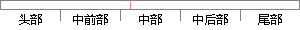

一个合法域名d包含了数字、字母、“.
片段位置图

相似结果|
相似片段 1：是非对称的，而我们需要一个对称的测量指标。所以修改K-L测量公式得到新的计算公式：Dsyn(PQ)=l／2(DKL(PIQ)+DKL(QIlP))。我们把合法域名和僵尸域名的字母数字的概率分布分别定义
相似片段 2： 在设定了保护站点库、规则库之后，需要解决如何将保护站点库中的规则生成相似域名的问题。相似域名生成算法就是利用规则库规定的相似字母替代合法域名中的相似字母，每次的替代形成一个新的相似域名，生成的相似域名
|
※ 片段修改建议 ※
近似词参考：- 合法：正当
- 包含：包括 包罗 包孕 蕴含
系统自动生成语句：一个正当域名d包括了数字、字母、“.
注：本片段修改建议为系统自动生成，仅供参考。